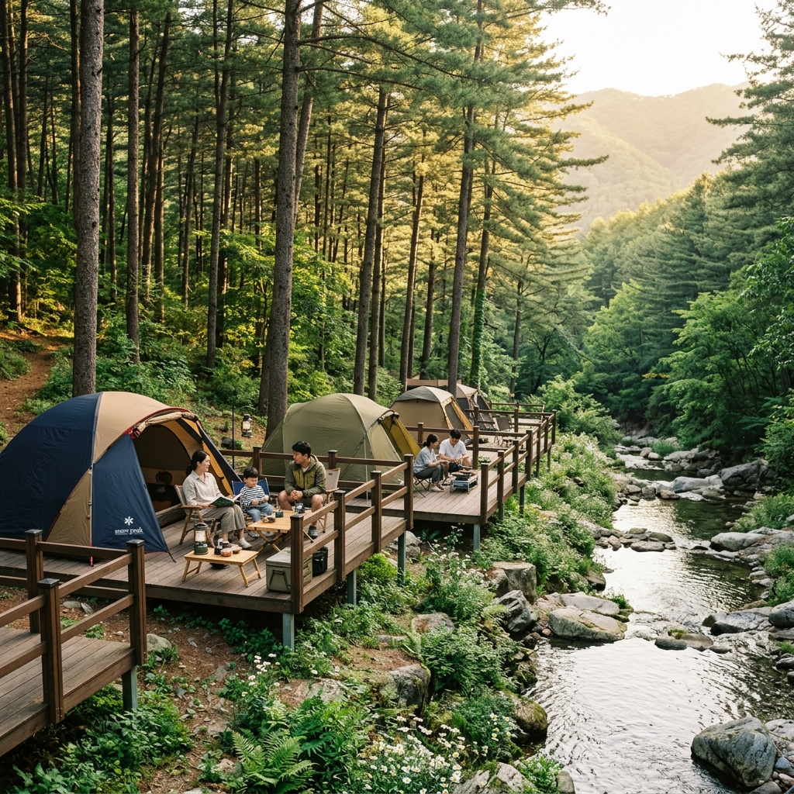
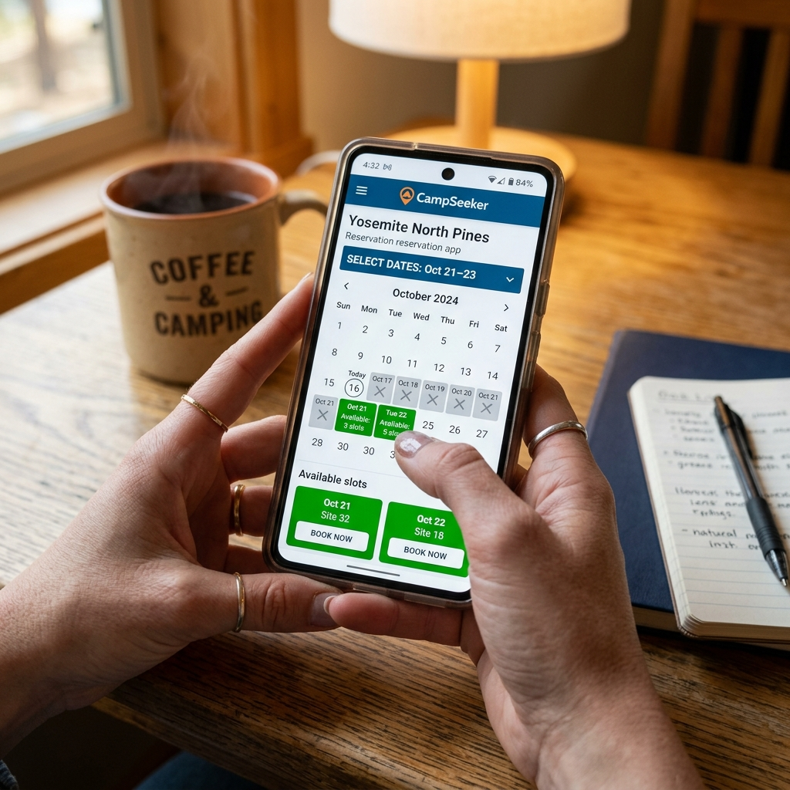
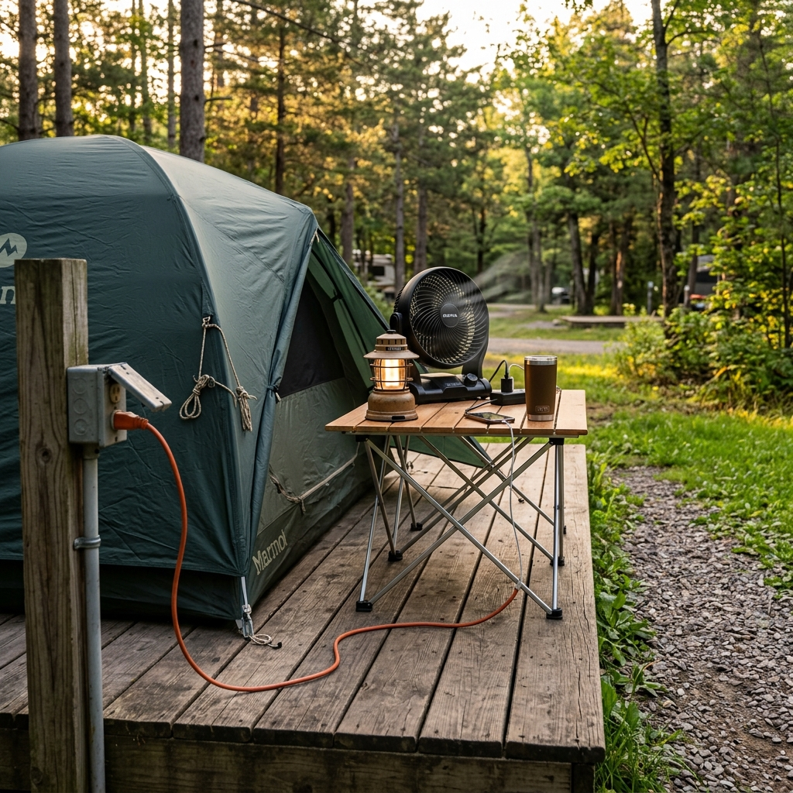

지난봄, 가족과 함께 떠날 첫 여름 캠핑을 준비하면서 저는 노트북 앞에서 한참을 멍하니 앉아 있었습니다.
분명 가고 싶은 야영장은 정해졌는데, 정작 "어느 사이트에 들어가서 무슨 버튼을 눌러야 하는지"가 도무지 잡히지 않았거든요.
국립공원, 자연휴양림, 지자체 캠핑장이 전부 따로 놀았고, 어디는 추첨이라는데 어디는 또 수요일 오전에 열린다고 하니 머리가 복잡했습니다.
그날 이후 직접 신청해 보고, 떨어져도 보고, 막판 빈자리로 자리를 잡아도 보면서 정리한 내용을 이 글에 풀어 둡니다.
혹시 저처럼 "캠핑은 가고 싶은데 예약이 무서워서 못 가겠다"는 분이 계시다면, 이 글 하나로 큰 그림이 잡히실 겁니다. 어디서 예약하는지, 언제 신청 창이 열리는지, 떨어졌을 때 어떻게 빈자리를 노리는지, 그리고 막상 사이트를 고를 때 전기와 바닥은 어떻게 정하는지까지 순서대로 짚어 보겠습니다.
캠핑 예약이 어려운 근본 이유는 단순합니다. 예약을 받는 곳이 여러 군데로 쪼개져 있기 때문입니다.
운영 주체가 다르면 사이트도, 신청 규칙도, 열리는 시각도 전부 달라집니다. 그러니 일정을 짜기 전에 "내가 가려는 곳이 어느 계열인가"부터 구분하는 게 순서입니다.
크게 보면 네 갈래입니다. 국립공원공단 야영장은 국립공원 예약시스템(reservation.knps.or.kr) 한 곳에서 처리되고, 산림청 국립자연휴양림은 숲나들e(foresttrip.go.kr)에서 받습니다.
나머지 둘은 시·군·구가 운영하는 지자체 캠핑장과 사장님이 직접 운영하는 민간 캠핑장인데, 이 둘은 통일된 창구가 없어 각자 안내하는 페이지로 들어가야 합니다.
여기서 헷갈리기 쉬운 점이 하나 있습니다. 국립공원과 자연휴양림 모두 '국립'이 붙지만, 앞쪽은 환경부 산하 국립공원공단이, 뒤쪽은 산림청이 맡습니다. 부처가 다르니 회원 가입부터 신청 화면까지 별개라고 보는 게 마음 편합니다.
그래서 한쪽 시스템에 익숙해졌다고 다른 쪽도 같을 거라 생각하면 낭패를 봅니다. 저는 처음에 이 차이를 모르고 같은 아이디로 로그인하려다 한참을 헤맸습니다.
저는 가고 싶은 곳을 메모할 때 옆에 예약처를 꼭 같이 적어 둡니다. 그래야 오픈일을 놓치지 않더라고요.

예전 국립공원 야영장은 그야말로 손가락 싸움이었습니다.
오픈 시각에 맞춰 새로고침을 연타해도 인기 야영장은 몇 분 만에 사라졌으니까요.
저도 그 시절엔 오픈 5분 전부터 손에 땀을 쥐고 새로고침 버튼 위에 손가락을 올려 두곤 했습니다. 그러다 결제 직전 페이지에서 멈춰 결국 놓친 적도 여러 번이었습니다.
그런데 이 풍경이 완전히 바뀌었습니다. 국립공원공단은 2026년 5월 1일부터 야영장 선착순을 없애고 연중 추첨제로 돌렸습니다.
이제는 오픈 시간에 접속하지 않아도 되고, 먼저 신청했다고 해서 당첨 확률이 올라가지도 않습니다.
운영은 짝수 달을 기준으로 연 6회 추첨 신청을 받는 방식입니다. 짝수 달 1일부터 5일까지 접수하고, 그 회차는 이후 두 달 치 이용분을 대상으로 추첨합니다.
이렇게 바뀐 데에는 그럴 만한 이유가 있었습니다. 예전에는 성수기엔 추첨, 비수기엔 선착순으로 방식이 섞여 있어 일정 파악이 복잡했고, 선착순 기간엔 오픈 몇 분 만에 마감되어 접속조차 못 하는 일이 잦았습니다.
지금은 프로그램이 무작위로 뽑는 구조라, 인터넷 속도나 정시 접속 가능 여부와 무관하게 누구에게나 같은 확률이 주어집니다. 회사에서 오전 10시에 새로고침을 누를 수 없던 저 같은 사람에겐 오히려 공평해진 셈입니다.
직접 겪어 보니 오픈 시각에 묶여 있던 스트레스가 확실히 사라졌습니다. 한 번에 안 돼도 두 달마다 기회가 돌아오니 길게 보고 접근하는 마음이 생기더군요.
추첨제로 바뀌면서 새로운 관건이 생겼습니다. 바로 "얼마나 영리하게 나눠 넣느냐"입니다.
월 신청 횟수가 2회에서 4회로 늘었으니, 이 기회를 한곳에 몰지 않는 게 핵심입니다.
같은 일정대를 두고 인기 야영장 한 곳과 경쟁이 덜한 야영장 한두 곳을 섞어 넣으면 적어도 하나는 걸릴 확률이 올라갑니다.
여기서 핵심은 욕심을 조금 내려놓는 것입니다. 누구나 아는 1순위 야영장만 네 번 넣으면 네 번 다 떨어질 수 있지만, 1순위 두 번에 차순위 두 번을 섞으면 적어도 한 번은 캠핑을 갈 가능성이 생깁니다. 일단 한 번 다녀와야 다음 시즌 전략도 세울 수 있습니다.
날짜도 마찬가지입니다. 모두가 노리는 금·토 조합 대신 일·월이나 목·금처럼 한 칸 비낀 일정을 끼워 두면 의외로 숨통이 트입니다. 일요일에 들어가 월요일에 나오는 일정은 도로도 한산하고 캠핑장도 조용해 오히려 만족도가 높았습니다.
단, 같은 날짜·같은 야영장 중복 신청은 막혀 있으니 날짜와 장소를 흩뜨려 넣어야 합니다.
당첨 이후의 흐름도 미리 알아 두면 좋습니다. 당첨되면 정해진 기간 안에 결제를 마쳐야 예약이 확정되고, 기한을 넘기면 자동 취소되어 다른 사람에게 넘어갑니다. 당첨에 들떠 결제를 미루다 자리를 잃는 일이 의외로 흔합니다.
그래서 저는 발표 다음 날 아침을 아예 '결제의 날'로 정해 둡니다. 어렵게 뽑힌 자리를 단순한 일정 착오로 날리는 것만큼 허무한 일도 없으니까요.
저는 직접 4회를 전부 다른 조합으로 채워 넣고 나서야 첫 당첨을 맛봤습니다. 한곳에 올인했던 첫 시즌엔 전부 떨어졌던 걸 떠올리면, 분산이 확실히 답이었습니다.
국립공원이 추첨으로 돌아섰다고 해서 모든 곳이 그런 건 아닙니다.
산림청 국립자연휴양림은 숲나들e에서 받는데, 이쪽은 여전히 선착순 비중이 커서 시각 싸움이 남아 있습니다.
평일 객실과 야영장은 매주 수요일 오전 9시에 선착순으로 열리는 것으로 안내됩니다. 일정 기간 뒤의 평일 분이 한꺼번에 풀리는 구조라 수요일 오전이 곧 승부처입니다.
그래서 수요일 오전 9시 직전에는 미리 로그인을 해 두고, 원하는 휴양림과 날짜를 즐겨찾기나 메모로 정리해 두는 게 좋습니다. 막상 창이 열리고 나서 휴양림을 찾아 들어가다 보면 그사이 인기 자리가 사라지기 때문입니다.
반면 주말과 공휴일 전날처럼 수요가 몰리는 날짜는 따로 추첨으로 운영하고, 여름 성수기에는 별도의 성수기 추첨이 더해집니다. 즉 휴양림은 '평일은 수요일 오전 선착순, 주말은 추첨'이라는 두 갈래를 머릿속에 넣어 두고 접근해야 합니다.
그래서 평일에 휴가를 낼 수 있는 분이라면 휴양림은 의외로 노려볼 만합니다. 주말 추첨 경쟁에 매달리는 것보다, 수요일 오전 선착순 평일 자리를 차분히 잡는 편이 성공률이 훨씬 높기 때문입니다.
또 휴양림은 객실(숙박동)만 있는 게 아니라 야영 데크도 함께 운영하는 곳이 많습니다. 텐트 캠핑을 원한다면 같은 숲나들e 안에서 야영장 카테고리를 따로 봐야 하는데, 객실은 만실이어도 야영 데크는 남아 있는 경우가 종종 있습니다.
한여름에도 휴양림은 계곡과 숲 그늘 덕에 도심보다 선선해 여름 수요가 특히 몰립니다. 그만큼 성수기 추첨 일정 공지가 뜨는 시점을 미리 챙겨 두는 게 중요합니다.
제 경험상 평일 연차를 하루 끼워 수요일 오픈을 노리는 게, 주말 추첨만 바라보는 것보다 훨씬 승률이 높았습니다.
추첨에 떨어지거나 선착순에서 밀렸다고 포기할 필요는 없습니다.
취소표, 즉 빈자리는 생각보다 자주 풀립니다. 일정이 바뀌어 예약을 접는 사람이 늘 있기 때문입니다.
제가 관찰한 패턴은 분명합니다. 환불 위약금이 한 단계 올라가기 직전에 취소가 몰립니다. 이용일이 다가올수록 돌려받는 돈이 줄어드니, 그 전에 정리하려는 심리가 작동하는 거죠.
그래서 환불 규정을 알아 두는 게 빈자리 사냥에도 도움이 됩니다. 위약금이 단계별로 어떻게 오르는지 알면, 사람들이 언제쯤 마음을 정리할지 역으로 가늠할 수 있기 때문입니다.
그래서 저는 이용 예정일 며칠 전, 그리고 출발 2~3일 전 막판에 한 번 더 들여다봅니다. 평일 오전이나 늦은 밤처럼 사람들이 결제를 정리하는 시간대에 자리가 갱신되는 경우가 많았습니다.
한 가지 현실적인 조언을 더하면, 빈자리는 '완벽한 자리'를 기다릴수록 못 잡습니다. 원하는 전기 사이트에 원하는 날짜까지 다 맞는 자리가 풀리길 바라다 결국 아무것도 못 잡는 경우가 많습니다.
그래서 저는 비슷한 조건이라도 일단 확보한 뒤, 더 나은 자리가 나오면 갈아타는 방식을 씁니다. 출발 사흘 전쯤 자투리 시간마다 잔여 현황을 보면 점심 직후나 자정 무렵에 자리가 갱신되는 걸 자주 봤습니다.
잔여 현황 페이지를 즐겨찾기 해 두고 짬짬이 새로고침하는 습관 하나로도 결과가 달라집니다. 다만 빈자리 알림을 내세우는 외부 서비스를 쓰더라도, 실제 예약은 반드시 공식 시스템에서 마무리해야 한다는 점은 잊지 마세요.

목적지가 아직 정해지지 않았다면, 선택의 출발점은 정보 검색입니다.
이때 한국관광공사가 운영하는 고캠핑(gocamping.or.kr)이 큰 도움이 됩니다.
고캠핑은 예약을 직접 받는 곳이 아니라 전국 캠핑장 정보를 모아 둔 포털에 가깝습니다. 지자체 야영장, 국립공원, 자연휴양림, 국민여가 캠핑장 같은 공공 우수 야영장 정보를 한눈에 검색할 수 있습니다.
그러니 흐름은 이렇게 잡으면 효율적입니다. 고캠핑에서 후보를 추리고, 실제 예약은 국립공원 예약시스템·숲나들e·지자체 페이지에서 마무리하는 것입니다. '정보는 한곳에서, 예약은 각자에게서'라고 외워 두면 헷갈리지 않습니다.
그러니 흐름은 이렇게 잡으면 좋습니다. 고캠핑에서 후보를 추리고, 실제 예약은 국립공원·숲나들e·지자체 페이지에서 마무리하는 것입니다.
고캠핑이 좋은 또 하나의 이유는 기본 정보를 한눈에 비교할 수 있다는 점입니다. 화장실·샤워장 유무, 전기 가능 여부, 반려동물 동반 가능 여부, 주변 편의시설 같은 항목을 미리 확인해 두면 현장에서 당황할 일이 줄어듭니다.
지자체 캠핑장은 가격이 저렴하고 관리가 잘 된 곳이 많아 가성비가 좋습니다. 다만 예약 페이지의 사용성이 제각각이고 전화 예약만 받는 곳도 있어 운영 방식을 미리 확인하는 게 좋습니다.
지자체 캠핑장은 창구가 제각각이라, 해당 시·군·구의 시설관리공단이나 관광 페이지를 직접 확인하는 편이 정확합니다. 저는 캠핑장 이름에 '예약'을 붙여 검색해 공식 창구를 한 번 더 확인하는 습관을 들였습니다. 검색 상단에 광고성 대행 페이지가 끼어 있을 수 있으니, 공식 운영 주체가 맞는지 꼭 확인하세요.
사이트를 고를 때 가장 많이 고민하는 게 전기 유무입니다.
제 결론은 "스타일과 계절에 따라 가치가 갈린다"입니다.
한여름 선풍기나 한겨울 전기장판처럼 냉난방 장비를 쓸 거라면 전기 사이트는 거의 필수에 가깝습니다. 특히 어린아이를 데려가거나 더위·추위에 약한 일행이 있다면 더욱 그렇습니다. 열대야에 선풍기 없이 텐트에서 버티는 건 생각보다 고역입니다.
반대로 봄가을에 가볍게 즐기는 캠핑이라면 굳이 고집할 이유가 없습니다. 보조 배터리만으로도 조명과 휴대폰 충전은 충분하니까요. 오히려 전기 없는 자리가 경쟁이 덜해 좋은 위치를 잡기 쉬울 때도 있습니다.
전기 사이트는 수가 적고 경쟁이 치열하므로, 정말 필요할 때만 노리는 게 현명합니다. 솔직히 저도 선선한 시즌엔 전기 없는 자리를 더 편하게 잡곤 합니다.
한 가지 자주 놓치는 점이 있습니다. 전기 사이트라고 콘센트가 텐트 바로 옆에 있는 건 아닙니다. 사이트 한쪽 공용 전기함에서 선을 끌어와야 하는 구조가 많아, 넉넉한 길이의 야외용 릴선을 챙기는 게 좋습니다. 짧은 멀티탭만 들고 갔다 콘센트에 닿지 않아 곤란했던 적이 저도 있습니다.
바닥 형태도 하룻밤의 쾌적함을 좌우합니다.
크게 데크(나무 평상), 파쇄석, 잔디·맨땅 사이트로 나뉩니다.
데크는 평상 위에 텐트를 치는 형태라 비가 와도 질척이지 않고 평탄해 설치가 편합니다. 다만 데크 크기에 텐트가 맞아야 하니, 예약 전 데크 규격과 내 텐트 사이즈를 꼭 비교해야 합니다. 데크용 팩이나 무게추가 따로 필요할 때도 있습니다.
파쇄석은 배수가 좋아 비 온 뒤에도 빨리 마르지만 일반 팩이 잘 안 박혀 단단한 단조 팩이 필요할 수 있습니다. 잔디·맨땅은 분위기는 좋아도 비가 오면 진흙탕이 되기 쉽고, 배수 상태에 따라 같은 캠핑장 안에서도 자리별 컨디션 차이가 큽니다.
그래서 예약할 때 사이트 유형 표기를 그냥 지나치지 마세요. 내 장비와 그날 일기예보를 함께 떠올리는 것만으로도 하룻밤의 쾌적함이 달라집니다. 사진만 예쁘게 보고 골랐다가 현장에서 실망하는 일을 줄일 수 있습니다.
한 가지 더, 데크 사이트는 텐트가 데크 규격에 맞아야 하므로 예약 전 데크 크기와 내 텐트 사이즈를 꼭 비교하세요. 데크 위에서는 일반 팩을 박을 수 없어 데크용 팩이나 무게추가 따로 필요한 경우도 있습니다.
저는 비 예보가 조금이라도 있으면 망설임 없이 데크를 고릅니다. 텐트 바닥이 젖는 스트레스가 의외로 크더라고요. 반대로 화창한 날엔 흙냄새와 풀의 감촉이 좋은 잔디 사이트가 그렇게 좋을 수가 없습니다.

여름 성수기에 2박 이상을 노린다면 욕심을 잠시 내려놓는 게 좋습니다.
가장 인기 있는 금·토 연박만 고집하면 빈손이 되기 십상이거든요.
제가 쓴 방법은 "일단 확보, 조정은 나중"입니다. 잡을 수 있는 날짜를 먼저 확보해 두고, 이후 취소표를 노려 원하는 날짜로 옮기거나 하루를 덧붙이는 식입니다.
또 시작일을 평일로 잡으면 한결 수월합니다. 목요일 입실로 출발하면 금·토보다 경쟁이 덜해 연박 자리를 잡기 쉽습니다. 직장인이라면 하루 휴가로도 충분히 여유로운 일정이 나옵니다.
연박 때는 날짜별로 사이트가 바뀌지 않는지도 확인하세요. 중간에 텐트를 옮겨야 하는 경우가 있어, 같은 사이트로 묶였는지 예약 내역을 꼭 점검해야 합니다.
연박을 권하는 이유는 분명합니다. 하루짜리 캠핑은 설치하고 정리하다 보면 정작 쉬는 시간이 얼마 안 됩니다. 2박이면 둘째 날은 설치 부담 없이 온전히 쉬고 놀 수 있어 만족도가 확 올라갑니다.
다만 성수기 연박은 비용도 짐도 그만큼 늘어납니다. 무리하게 긴 일정을 잡기보다 본인의 체력과 예산에 맞춰 1박이냐 2박이냐를 먼저 정하고 자리를 노리는 편이 후회가 적습니다.
솔직하게 말하면, 지금의 캠핑 예약 체계는 장단이 분명합니다.
장점은 국립공원 추첨제 덕분에 오픈 시각에 매달리는 부담이 사라졌고, 월 4회로 기회가 늘었다는 점입니다. 단점은 시스템마다 규칙이 제각각이라 처음엔 학습 비용이 든다는 것, 그리고 인기 자리는 여전히 운이 따라야 한다는 점입니다.
그래서 환불·노쇼 규정을 미리 알아 두는 게 손해를 줄이는 길입니다.
국립공원 예약시스템은 이용일까지 남은 기간에 따라 환불 비율이 차등 적용되어, 임박할수록 위약금이 커집니다. 환불 처리에도 며칠의 영업일이 걸릴 수 있으니 여유를 두고 생각해야 합니다.
노쇼, 즉 취소 없이 나타나지 않으면 일정 기간 예약이 제한되는 페널티가 부과될 수 있는 것으로 안내됩니다. 국립공원공단 산하 시설은 예약부도 시 일정 기간 예약을 막는 정책을 운영하니, 못 가게 됐다면 그냥 안 가는 게 아니라 반드시 취소 처리를 해 두어야 합니다.
못 가게 됐다면 반드시 미리 취소해 다른 사람에게 자리를 넘기세요. 휴양림과 지자체·민간은 규정이 또 다르니, 확정 전 해당 사이트 환불 정책을 한 번 더 읽어 두시길 권합니다.
저는 예약을 마칠 때마다 캘린더에 '위약금 단계 바뀌는 날'을 표시해 둡니다. 일정이 흔들릴 것 같으면 그 전에 결정해야 손해가 적거든요. 빈자리를 노리는 입장에서도, 환불 규정을 알면 언제쯤 취소표가 풀릴지 가늠할 수 있어 일석이조입니다.
결국 캠핑 예약은 한 번 익혀 두면 계속 써먹는 생활 기술에 가깝습니다. 처음 한두 번이 어렵지, 흐름만 잡으면 그다음부터는 훨씬 수월해집니다. 이번 여름, 원하는 자리에서 좋은 추억 만드시길 바랍니다.
| 구분 | 예약처 | 방식 |
| 국립공원 야영장 | reservation.knps.or.kr | 연중 추첨제(짝수 달 1~5일) |
| 국립자연휴양림 | 숲나들e | 평일 선착순(수요일 오전)+주말 추첨 |
| 캠핑장 검색 | 고캠핑(gocamping.or.kr) | 정보 포털(직접 예약 아님) |
| 지자체 캠핑장 | 각 시·군·구 페이지 | 창구 제각각, 공식 페이지 확인 |